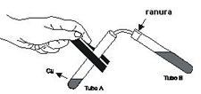

Práctica 17: Reacciones de Oxido - Reducción
Práctica 17: Reacciones de Oxido - Reducción
| Objetivo: |
Al finalizar la práctica, el alumno aplicará los conceptos de oxidación reducción de acuerdo con la reacción para identificar la acción de los agentes oxidantes y reductores. |
| Material |
| Introducción: |
| Las reacciones de reducción-oxidación (también conocido como reacción redox) son las reacciones de transferencia de electrones. Esta transferencia se produce entre un conjunto de especies químicas, uno oxidante y uno reductor (una forma reducida y una forma oxidada respectivamente) Para que exista una reacción redox, en el sistema debe haber una especie que ceda electrones y otra especie que las acepte: El oxidante es la especie que tiende a captar esos electrones, quedando con carga menor a la que tenía. Cuando una especie química reductora cede electrones al medio se convierte en una especie oxidada, y la relación que guarda con su precursor queda establecida mediante lo que se llama un par redox. Análogamente, se dice que cuando una especie capta electrones del medio se convierte en una especie reducida, e igualmente forma un par redox con su precursor reducido. |
| Desarrollo Experimental: |
|
Montar el esquema, (Figura 1). Experimento 1:
|
| Resultados y Conclusiones : |
|
1) ¿Qué es una reacción de óxido-reducción? 4)Complete la ecuación de la reacción y del nombre del producto formado. 3Cu + 6HNO3 → 3Cu(NO3)2 + 2NO + 4H2O El monóxido de nitrógeno, gas inicialmente liberado, es incoloro. Al entrar en contacto con el aire sufre oxidación formando el dióxido de nitrógeno (gas castaño). El dióxido de nitrógeno es un anhídrido mixto (óxido ácido), es decir, en contacto con el agua produce los ácidos nítrico (HNO3) y nitroso (HNO2), según la ecuación. 2NO2 + H2O → HNO3 + HNO2 La solución de esos dos ácidos es inestable, sufriendo el ácido nitroso descomposición en ácido nítrico, monóxido de nitrógeno y agua, conforme la ecuación mostrada a seguir. |
| Figura 1 |
|  |